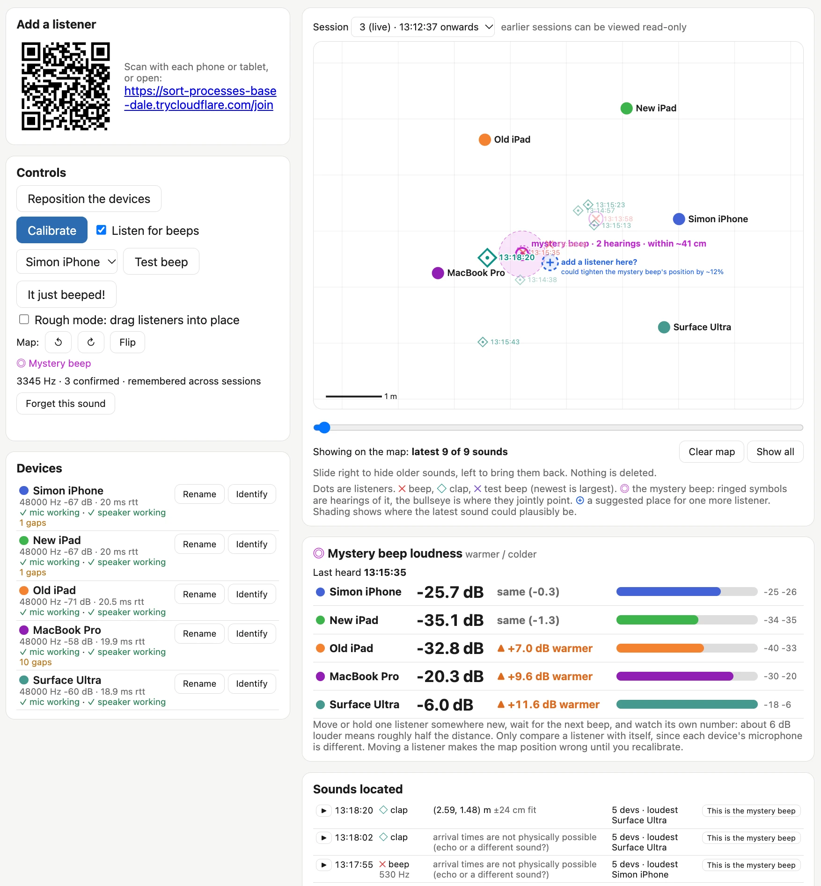

HELLO, HUMAN / LETTER 07
AI가 보고 듣고,
다시 고치게 하려면
AI가 만든 도구가 제대로 작동하는지 어떻게 알 수 있을까요?
경고음의 위치를 찾는 도구의 제작기부터 판단과 실행 결과를 확인하는 방법까지 모았습니다.
안녕하세요, 헬로우 휴먼 멤버 여러분. 일곱 번째 편지입니다.
상자가 쌓인 방에서 가끔 삐 소리가 납니다. 어느 상자에서 나는지 찾기 어려웠던 사이먼 윌리슨은 Claude Code와 함께 소리의 위치를 찾는 도구를 만들었습니다. 휴대전화와 태블릿, 노트북으로 소리를 녹음하고, 박수를 쳐서 도구가 위치를 제대로 짚는지 시험하며 고쳐나갔습니다.
이번 주에는 이 제작기부터 읽어보세요. 에이전트가 실제 결과를 확인하며 도구를 고치게 하려면 무엇이 필요한지 생각해볼 수 있습니다. 선택지를 평가하는 Gemini Decision 1과, 서버 버전은 그대로인데 함께 쓰는 라이브러리가 바뀐 MCP 조사를 다룬 글도 추천합니다.
11월 10일부터 16일까지 올라온 일반뉴스 7편, 단신 2편, 사례연구 1편을 모두 담았습니다. 회원 작업물에는 Fable 5.2로 만든 앨리스 페이지가 추가됐습니다. 새 소식을 읽은 뒤, 같은 주제를 모델마다 어떻게 표현했는지도 둘러보세요.
어디서 시작할지 고민이라면
먼저 읽기 좋은 3편
삐 소리가 날까
여러 기기의 녹음과 사람의 확인을 거치며 도구를 개선한 제작기입니다. AI에게 코드를 맡길 때, 제대로 작동하는지 확인할 방법도 함께 마련해보세요.
Beep Locator 사례연구 → 판단 기준 정하기 · 답을 고르는 일과실행을 허용하는 일
선택지별 확률과 답의 신뢰도를 알려주는 모델입니다. 문의 분류를 자동화한다면 모델의 판단을 언제 받아들이고, 언제 사람에게 넘길지 함께 생각해보세요.
Gemini Decision 1 소식 → 실행 조건 확인하기 · 버전은 같은데왜 달라졌을까
서버 버전을 고정해도 함께 쓰는 라이브러리의 버전은 바뀔 수 있습니다. 어제와 다른 결과가 나왔을 때, 설치된 프로그램도 비교해봐야 하는 이유를 짚습니다.
Corelight의 MCP 조사 →사례연구 · 1편
소리를 듣고, 위치를 확인하고, 도구를 고치다
실제 동작을 확인할 수 있어야 어디를 고칠지도 정할 수 있습니다. Beep Locator의 녹음과 진단 화면에서 그 과정을 살펴봅니다.
AI에게 귀를 달아 경고음의 위치를 찾다 →
사이먼 윌리슨은 다섯 기기의 녹음을 비교해 소리의 위치를 약 40cm 범위로 좁히고, 상자 속 감지기를 찾았다고 기록했습니다. 이 글에서는 공개 코드와 제작 과정을 살펴본 뒤, 업무 오류를 조사할 때 어떤 기록을 모으고 확인하면 좋을지 제안합니다.

AI뉴스 · 7편
선택지를 고르고, 일을 나누고, 결과를 확인하기
새 모델의 성능과 가격부터 상품 상담·결제까지, AI로 할 수 있는 일과 결과를 확인하는 방법을 함께 읽습니다.
Corelight가 짚은 MCP, 버전은 같아도 실행 환경은 바뀐다 →
Corelight가 서버 버전은 그대로인데 함께 설치된 라이브러리가 바뀐 사례와, 라이브러리 버전까지 고정한 방법을 소개했습니다. Fable 5.2가 코드로 붓질을 구현해 그린 그림과, 사람의 지시에 따라 고쳐나간 과정도 담았습니다.
Factory Droid, 도구 추적과 실행 기록 개선 →
Droid 1.12.0은 어느 도구의 어떤 기능을 호출했는지 알아보기 쉽게 표시하고, GitHub·GitLab 명령이 실패했는데도 결과물이 기록되던 오류를 고쳤습니다. OpenAI의 비용 데이터 지연 사례를 통해 작업의 성공 여부와 비용 집계 상태를 따로 확인하는 방법도 다룹니다.
OpenAI ChatGPT Wallet, 승인한 구매를 결제로 잇는다 →
이용 조건을 충족한 미국 Pro 사용자에게 dot과의 대화에서 차례로 제공하는 결제 기능입니다. 구매 승인과 주문 확정의 차이를 짚고, Antigravity의 독립 검증 연구, llama.cpp의 호환성 관리, 금융정보를 조회·분석하는 Gemini의 읽기 전용 연결 기능도 소개합니다.
Gemini 4 Hydrogen, 계획과 실행을 나눠 맡긴다 →
Google의 Orchestrator는 Carbon과 Hydrogen이 계획·코드 수정·테스트를 나눠 맡도록 합니다. 안전장치를 시험하는 Anvil, 모델이 사용자 지시와 외부 자료를 구분하도록 돕는 IBM LLMON, Holiday Extras의 앱 재구축 사례도 소개합니다.
Gemini Decision 1, 답변 대신 선택지를 평가한다 →
어떤 도구를 쓸지, 문의를 어느 유형으로 분류할지처럼 정해진 후보 중에서 답을 고르는 모델입니다. 신뢰도가 낮은 답을 보류하는 실험 제안과 CloudSEK의 에이전트 악용 조사, Google의 에이전트 설계 인증, Tabletop 협업 실험을 담았습니다.
OpenAI 기업 에이전트 출시, eBay에서는 Muse의 상품 조회 실패 →
미국에서 자격 요건을 갖춘 기업에 열린 상담 에이전트와, Meta Muse가 eBay 상품을 조회하지 못했다는 보도를 다룹니다. 기업이 운영하는 상담 창구와 외부 에이전트의 접근 허가를 구분하고, Carbon·Claude의 작업 환경과 외주 공고 분석도 소개합니다.
Claude Fable 5.2, 성능 높이고 가격 낮췄다 →
Anthropic의 성능·가격 발표, 외부 기관의 분야별 평가와 LG K-엑사원 2.5 무료 API 소식을 모았습니다. Google의 새 AI 연산 칩인 TPU와 추론 중간 상태를 재사용하는 TPU Sync도 소개하며, 모델을 고를 때 실행 비용까지 살펴봅니다.
후속 확인 · 11월 17일 뉴스 48호 작성 당시에는 OpenAI 비용 데이터 제공이 지연되고 있었습니다. 공식 상태 페이지에는 11월 16일 해결됐다고 안내돼 있으며, 당시 API와 ChatGPT 사용 자체에는 영향이 없었다고 적혀 있습니다. 상태 공지 ↗
속보·단신 · 2편
앱의 접근 권한과 서버의 보안 업데이트
누가 앱의 데이터를 볼 수 있는지, 서버에는 보안 업데이트가 적용됐는지 확인할 때 참고할 두 소식입니다.
Lovable로 만든 일부 앱, 로그인 없이 개인정보 노출 보고 →
보안 연구진이 일부 앱에서 로그인 없이 채팅 내용과 신원정보를 조회할 수 있었다고 보고했습니다. 조사 범위의 한계와 회사의 답변을 소개하고, 로그인 전의 접근뿐 아니라 다른 계정의 데이터에 접근할 수 있는지도 확인해야 하는 이유를 짚습니다.
Apache HTTP Server, HTTP/2 취약점과 업데이트 확인하기 →
Apache가 2.4.71에서 원격 코드 실행 문제를 포함한 취약점 3건을 수정했습니다. HTTP/2를 사용하는지 확인하는 일부터 설치 방식·배포판에 맞는 보안 공지를 찾고, 업데이트가 적용됐는지 점검하는 순서까지 안내합니다.
Lovable 단신에서 다룬 대상은 고객이 만든 앱입니다. Lovable 자체 시스템이 침해됐다는 보고는 아니며, 공개 자료만으로는 실제 악용 여부나 문제가 발견된 앱들의 수정 완료 여부를 알 수 없습니다.
회원 작업물 · 업데이트 1편
Fable 5.2가 만든 거울나라 둘러보기
모델별 웹 제작 실험에 Fable 5.2의 결과 페이지와 제작 기록이 추가됐습니다. 기존 작업물의 업데이트로, 새 글 10편과 따로 소개합니다.
앨리스 웹 제작 실험에 Fable 5.2 추가 →
은빛 유리와 금테 거울, 여덟 장면을 따라 움직이는 체스 말로 ‘거울나라의 앨리스’를 표현했습니다. 다른 모델이 만든 페이지도 열어보고, 화면을 어떻게 구성했는지, 누르거나 스크롤할 때 어떤 반응을 보이는지 비교해보세요.
다음에 에이전트에게 오류 조사를 맡길 때는 “왜 이럴까요?”라고 물으며 문제 화면이나 테스트 결과도 함께 건네보세요. 이어서 “원인을 판단하려면 무엇을 더 확인해야 할까요?”라고 물어보는 것도 좋겠습니다.
단서 하나를 더 찾고 나서 진단이 달라진 경험이 있다면 모임에서 나눠주세요. 민감한 정보가 드러나지 않는 가상 예시로 바꿔, 어떤 근거를 보고 조사 방향을 정했는지 함께 살펴보겠습니다.
다음 화요일에 또 뵙겠습니다.
헬로우 휴먼 드림